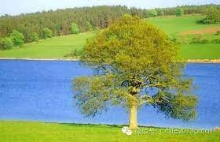

詩篇 第一篇
1:1 不從惡人的計謀，不站罪人的道路，不坐褻慢人的座位，
親愛的天父上帝，幫助OOO不從惡人的計謀，幫助OOO不站罪人的道路。幫助我幫助OOO不坐褻慢人的座位。，
1:2 惟喜愛耶和華的律法，晝夜思想，這人便為有福！，
求主使OOO願意喜愛耶和華的律法，晝夜思想祢的話語，在祢的應許中，讓OOO成為有福的人。，
1:3 他要像一棵樹栽在溪水旁，按時候結果子，葉子也不枯乾。凡他所做的盡都順利。，
OOO要像一棵樹栽在溪水旁，按時候結果子，葉子也不枯乾。使OOO所做的盡都順利。，
1:4 惡人並不是這樣，乃像糠秕被風吹散。，
主阿，我願順服你的話語，不致成為惡人，像糠秕被風吹散。，
1:5 因此，當審判的時候惡人必站立不住；罪人在義人的會中也是如此。，
求主使我靠你的寶血，能坦然無懼的到你審判的寶座前，赦免我知道和不知道的罪。，
1:6 因為耶和華知道義人的道路；惡人的道路卻必滅亡。，
感謝你，知道我的道路。使我不至滅亡。
這首詩篇一開始描述如何進入愚昧人的道路, 不從……,不站……,不坐……. 這三個詞採用遞進的順序, 描述了罪惡道路的步驟：首先朝著違背神之人的方向，隨從世俗的習慣；接下來就與那些受罪惡誘惑、屈從試探的叛逆者交往；最後就決心與罪人同流合污，褻慢亮光. 而且這三個動詞全部都是完成式, 強調如果是敬虔的人從來不會涉及任何沾染罪惡的事, 更不會進入愚昧人的任何一個步驟.
為什麼可以這樣呢? 因為他們是喜愛耶和華的律法, 而且從早到晚都不斷的思想背誦的. 在詩篇119:11＂我將祢的話藏在心裡, 免得我得罪祢.＂ 當我們心中有上帝的話時, 就會像有一面鏡子, 或是像被光照, 照出或顯明我們的行為是否有符合上帝的話語. 因此作者似乎道出一個蒙福的方法, 在消極面, 就是避免走上愚昧人的道路或者是不和罪惡沾染或牽連關係, 但在積極面就是讓神的話語成為我們生命的引導或導航. 這樣讓神的話語成為我們生命的糧食, 不斷的供應我們, 我們的生命就會像一棵大樹, 栽種在溪水旁邊. 耶穌說祂是活水, 是一條源頭不會斷源的活水, 而且這條活水是能夠變成江河的.
當我們栽種在這樣的環境裡, 這棵大樹會自然有一個反應, 就是葉子和果子都會很茂盛. 這葉子和果子的意象向敬虔人的大保證, 他們將會得著神所賜的福, 享受生命這份從神而來的禮物. 然而這種福並非指大富大貴或成功神學的信仰那種, 是指走在上帝的計畫和道路上, 凡事都可以亨通或順利. 縱然我們生命有像耶穌墳墓的那塊大石頭擋住, 使我們無法經過死蔭的幽谷而通往復活的人生, 也就是我們被舊生命捆綁而活不出上帝要我們活出的新生命, 縱然問題都還在, 也不可能不見, 上帝都會為我們挪開那擋住的石頭, 讓我們從困難的旁邊走過.
另一個隱藏的福分則是在看不見的根. 當一個人願意讓自己的生命栽種於上帝話語的溪水之中, 他生命的這棵樹苗, 就會變成大樹, 除了有上帝賜與的福之外, 生命看不見的地方, 會長出根來, 緊緊的抓牢在磐石上,因此就算失去這些福分, 如經歷寒冷的冬天, 或如先知哈巴谷所說, 雖然無花果樹不發旺……(哈3:17), 但我們仍是有福的, 因為我們的根扎於磐石中, 又有江河的供應, 冬天會過, 接下來就是春天的來臨. 又會有新的一波賜福來到, 這一波會蓋過上波失去的, 甚至超越上一波的, 因為生命不論是否有茂盛的葉子或結實纍纍的果實, 因為根的關係, 生命都在成長, 只要水源沒有斷, 這樣的生命是不會消失的.
接下來作者讓我們看到相反的一面, 就是惡人的生命. 這樣的生命像糠粃一樣, 經不起挑戰, 而且他們的生命像糠粃一樣無用和短暫. 即使曾經包覆有價值、有意義的東西, 最後還是抓不住, 而隨著挑戰或困難而消失. 糠粃的隱喻揭露了惡人的無用與神何等容易對付他們. 正如簸穀器將糠粃拋像午後的微風, 主也要照樣將惡人吹散, 沒有人會記得他們的所在. 他們在活著的時候, 仍忙於作惡, 因此對他們的結局可能還是不清楚, 但從神的角度看來, 惡人是沒有前途. 因為他們禁不起神的審判, 無論那審判是在今生藉著逆境臨到的, 還是在主的日子. 他們受審判是與義人的會 (那些與神有關係並享受祂同在的人, 他們將會在現今與將來的生命中經歷上帝的同在) 隔離. 我們知道上帝是光、是愛、是公義、是平安、是喜樂……, 因此將來惡人的審判結果, 就是與上帝隔離, 那這樣與上帝隔離的人, 就無法與義人共享上帝所帶來的福, 如被愛、享平安…… 等等, 所面對的也只有剩下罪惡的捆綁和控告及永遠的刑罰或滅亡的道路.
為什麼會有這樣截然不同的結果呢? 神關心義人, 照顧他的全生命; 但惡人既不遵行神的律法, 等於不要神看顧, 自絕於神。那些不結果子的人將會落在神話語的審判底下: 「我從來不認你們, 你們這些作惡的人, 離開我去吧!」(太7:23) 而且在第六節所用的"知道"的這個動詞, 也用來指夫妻之間的親密關係, 因此神的知道是神深切地承諾、愛、並眷顧祂自己的人, 因此它也是表達祂聖約的應許. 同時這裡說的義人的道路的特徵是愛神並願意過敬虔的生活, 也願意讓上帝話語充滿的人.
這是整部詩篇的首篇, 它反映了其他詩的內涵: 主要稱揚神的慈愛和公義, 祂是全地的主, 是人類最終的審判者. 凡與神親近的, 必成為義人, 能享受從祂而來的福分; 與祂相違的, 就是惡者, 必遭滅亡. 詩人藉這篇詩篇在勾畫出兩種人生, 陳明在世人面前, 叫人知道人並非單獨活著, 神是在其中的, 所以他們要對生命負責, 做出合宜的選擇. 那我們的選擇是甚麼呢? 願意付代價過那不會後悔又有主看顧的人生嗎?